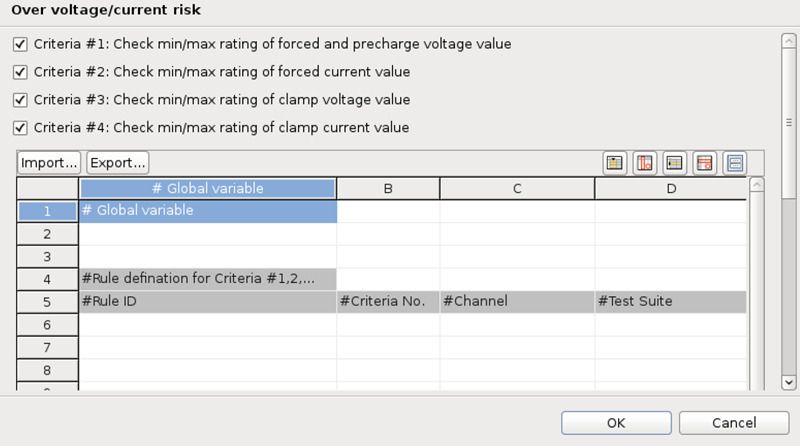

Preferences for overvoltage and overcurrent risk check
In the Preferences window, you can select the criteria to be checked and set up the rules for the criteria.

You can set up global variables under the Global variable cell for all selected criteria. The settings here overwrites the rule definition for specific criteria.
- Rule ID
- The index number of a rule.
- Criteria No.
- The criteria numbers on which this rule will be applied.
- Channel
- The channels or channel groups to be checked. If you enter @, all channels and channel groups will be checked.
- Test Suite
- The test suites or suite groups on which the rule will be applied.
If this cell is empty, all test suites and suite groups will be checked.
Use ! to exclude some test suites from the check.
- Min Voltage(V)
- The minimum voltage limit.
- Max Voltage(V)
- The maximum voltage limit.
- Min Current(mA)
- The minimum current limit.
- Max Current(mA)
- The maximum current limit.
- Utility/PMUX status in path
- The relay status on the utility or PMUX card.The syntax to define the relays:
- |: This means "or".
- (): This means a combination of multiple relay conditions.
- & or +: They both stand for "and".
- !: The relay is open. The relay without this sign is closed.
For example, K01+K02+K03 means the relays K01, K02, K03 are all closed. K03&(!K01|!K02) means K03 is closed and K01 or K02 is open.
- Comment
- Note or comment to the rule.
To modify the contents of the cells, you can click the buttons at the top right of the table.

If you want to reuse the configurations in the table, click the Export button to save them as a CSV file. You can import the saved file in another configuration by clicking the Import button.
Functional changes
- Introduced in SmarTest 7.4.3